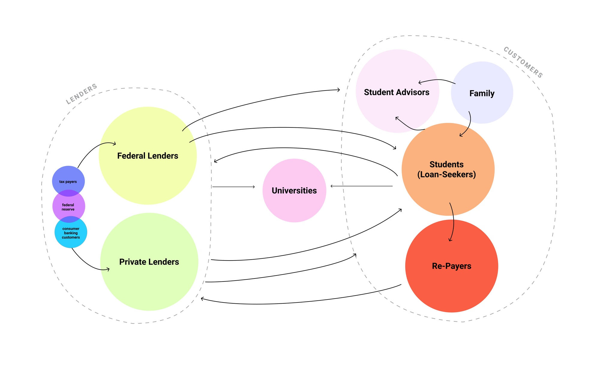

Discover Student Loans x CMU MHCI Capstone In Progress
My Role Product Designer / Researcher
Time Jan 2020 - Present
Team Stacy Kellner, Cora Wang, Bidisah Roy, Aaron Bishop
Overview
The experience of applying for a student loan can be overwhelming. The process of getting a student loan is tightly coupled with discovering career aspirations, deciding which institution(s) to attend, planning long-term finances and selecting the appropriate loan products. Our team aims to help Discover understand the decision context through research and create value for our client in terms of increased conversion and acquisition of long-term customers at the beginning of their financial lives.
Client's Initial Problem Statement
Why is there a drop-off at Discover Student Loans' product selection page?
Stakeholder Map: Student Loan Industry
There are multiple plays in the student loan industry: students, parents, lenders, educators, and universities. We created this stakeholer map to define the user groups we want to do primary research with.
Primary Research
We conducted several rounds of exploratory & generative research with key stakeholder groups, including 14 students, 13 parents and 12 educators in total.
Guerrilla Research
Interview
Card Sorting
Observe & Intercept
Storyboarding
Conceptual Prototype

👆Stacy and I hugging our affinity map after the first round of synthesizing session :)
Key Insights
After two rounds of research and affinity mapping sessions, we synthesized our findings into a collection of models and insights.
1.
When making financial decisions for their kids, parents want to feel like they’re in the driver’s seat.
“Parents are afraid of admitting what they don’t know to their children because they think it’s their responsibility to know.” - financial advisor
2.
When overwhelmed by complex information, customers rely on stereotypes
“My father felt that private lenders were loan sharks.” - grad student
3.
Parental engagement inversely correlates with student engagement
"My dad made all the decisions about financing college. He believed federal loans were inherently better than private loans, so I just believed that too." - undergrad
4.
Parents accept that there can be a “right” amount of debt.
“My idea was that she shouldn’t graduate with more than $20k worth of debt. It just seems like a reasonable amount that can be paid off in 5 years. It's okay to go into debt for the right purpose. ” - dad
5.
Student loan applications are used as de facto rate calculators.
“I filled out multiple applications because I was shopping around and seeing rates from different companies, not because I was serious about applying.” - grad student
6.
Customers narrowly focus on “rate,” largely ignoring other forms of value
“I kept trying to see what I would pay overall...what’s the monthly payment and how fast can I pay it off?” - grad student
Student Personas
We identidied two archetypical student users: Sheltered Scholar and Pragmatic Planner.


Parent Personas
Since most of the DSL customers are undergraduate students, it means the actual users are these students' parents. Thus, we shifted our research focus from students to parents.
Parents take different parenting approaches regarding student loans application. To put them on a spectrum, one end would be Guiding Parent , while another end would be Leading Parent.


Customer Journey: Paying for College
People don't want to get a loan. They want an education. Student loan is the means to the end.

Problem Reframe
How might we help customers commit to one of DSL’s student loan products?
Opportunity Areas
Customization / contextualization: deciding which product is right for ME specifically
Collaborative long-term planning between parents and students
Sense of accomplishment and value: rewards around making the investment
...More to come!
The capstone team is working hard during summer semester (remotely!) :) I will kept the proejct updated. The full deliverables will be avaliable by the end of August 2020.